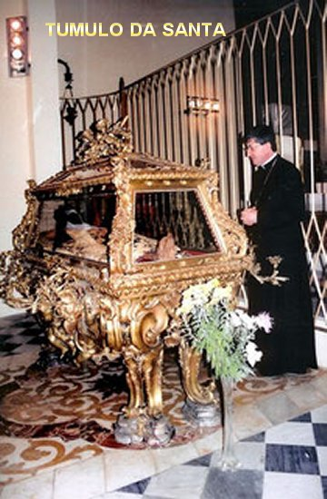

“CAMINHO
DA ETERNIDADE”
SEGUINDO PASSOS DE JESUS
Sem dúvida foram graças muito
especiais que JESUS concedeu a Irmã Maria Madalena. E naturalmente na amorosa
psicologia Divina, depois dessas graças tão insignes o SENHOR anunciou
antecipando a Irmã, que aconteceria um período de provações e lutas. E
carinhosamente procedeu assim para lhe dar oportunidade de pensar e pronunciar a
sua concordância, unindo-a cada vez mais ao CRISTO SENHOR que também era
obediente e sofredor. A Irmã Maria Madalena na sua simplicidade e confiança,
apenas respondeu:“Senhor,
basta-me a Vossa Graça!”
insignes o SENHOR anunciou
antecipando a Irmã, que aconteceria um período de provações e lutas. E
carinhosamente procedeu assim para lhe dar oportunidade de pensar e pronunciar a
sua concordância, unindo-a cada vez mais ao CRISTO SENHOR que também era
obediente e sofredor. A Irmã Maria Madalena na sua simplicidade e confiança,
apenas respondeu:“Senhor,
basta-me a Vossa Graça!”
E assim, em poucos dias, de
repente, ela se sentiu mergulhada nas trevas do espírito, segundo a expressão
dela:“uma verdadeira jaula
de leões”, oportunidade em que o inimigo
infernal aproveitou para atentar contra o maravilhoso baluarte das suas virtudes.
“A terrível
prova que se iniciou na Solenidade da Santíssima Trindade de 1585, fez com que a
Irmã Maria Madalena perdesse completamente o gosto pela oração e por qualquer
exercício de piedade; experimentou tentações contra a pureza, contra a fé,
contra a humildade e até contra a alimentação; o espírito maligno sugeria-lhe
pensamentos de blasfêmia e de desespero, a ponto de lhe inspirar a idéia de
abandonar o hábito religioso e fugir da Comunidade”.
Em outras ocasiões, os demônios
lhe apareciam corporalmente e se lançavam sobre ela espancando-a durante horas.
A tantas tribulações, veio se juntar mais uma amargura: várias Irmãs da
Comunidade Religiosa, não compreendendo suas atitudes, a criticavam acusando-a
de que interpretava faltas imaginárias.
E assim, cinco longos anos
se passaram em meio a tais lutas, entremeadas de curtas intermitências de
consolações. Por fim, no dia de Pentecostes do ano 1590, ela entrou em êxtase
durante o cântico das Matinas e se sentiu libertada. O demônio não conseguiu
triunfar sobre ela. Logo apareceram os catorze Santos da sua especial devoção, e
congratularam-se com ela pela vitória alcançada.
O AMOR TOTAL
Ultrapassada aquela
fase terrível, Irmã Maria Madalena aplicou-se no trabalho com esmero e com uma
virtuosa atuação de mestra de noviças e depois, sub-Priora da Comunidade
Religiosa. E nesta época, também se preocupou muito com a política,
principalmente com os insidiosos ataques dos inimigos da Igreja. Fato que,
iluminada pelo ESPÍRITO SANTO, a conduziu escrever muitas cartas (cartas
datadas, mas algumas não foram enviadas), para amigos, Sacerdotes, Cardeais
e até para o Papa Cisto V, lembrando-lhes que todos tinham o dever de levar
uma vida pessoal e eclesial baseada na linha do evangelho; sugeria idéias
e atitudes, realizando verdadeiramente um trabalho difícil, mas inédito,
de “renovação da
Igreja”, como fizeram outras
religiosas importantes da sua época: Santa Catarina de Sena, Santa
Ângela de Foligno, e outras.
A Irmã Maria Madalena,
do mesmo modo que Santa Catarina de Sena foi uma mística eclesial, que
chamou o povo de DEUS inteiramente à conversão, não pela "reprimenda ou pela punição",como alguns escritores imaginam, mas antes batendo na porta
do ESPÍRITO SANTO,
“AQUELE” que "abre para todos que pedem".
Seu tratado espiritual
"OS OITO DIAS DO ESPÍRITO SANTO"
(Publicado em francês por Gianfranco Tuveri,
Edições J. Millon, em 2004) relata uma experiência mística acontecida com ela, do dia
27 de maio a 06 de julho de 1584, um período de "Quarenta dias”
durante a qual ela experimentou êxtases diários, quando era apenas uma jovem professa
de 18 anos de idade.
Foi um
"mergulho no mistério de DEUS,
contemplado à luz do Amor de JESUS e numa intimidade subsidiária com a SANTÍSSIMA
VIRGEM MARIA".Estas são palavras dela
mesma, que explicam com clareza a realidade acontecida.
Um ano depois, viveu uma semana
de "revelações"
e "luzes": quase oito dias
e oito noites, num contínuo êxtase.
OS ÊXTASES CONTINUARAM
Ao longo de 20
anos, os êxtases continuaram com uma impressionante iluminação do ESPÍRITO
SANTO. As Irmãs do Convento de São Fridiano se revezavam avidamente para anotar
todas as suas palavras, que verdadeiramente eram manifestações do ESPÍRITO. As
palavras brotavam de seus lábios com tal abundância, que uma só pessoa não
conseguia escrever tudo aquilo que o ESPÍRITO SANTO dizia através dela. Então se
tornaram necessário escalar mais religiosas, de maneira a não perder aquelas
preciosas revelações pronunciadas pela Irmã quando em êxtase. Também ela deixou
muitos escritos, em que
“Habitada pelo ESPÍRITO”
é um dos mais famosos.
SUA ESPIRITUALIDADE
Por outro lado, a espiritualidade
da Irmã Maria Madalena de Pazzi centrava-se no “Amor Puro” que ela chamava de
“Amor Morto”. Último degrau na escala da perfeição por ela mesma descrita; a alma que o possui
“não deseja, não quer, não anseia e
não procura coisa alguma. Pelo abandono total, se faz morrer a si mesma em DEUS. Nada
quer, nada sabe e nada deseja poder. O pesar não é pesar para ela e não busca a glória,
mas vive em tudo como morta em DEUS”.
ORAÇÃO A JESUS
O seu amor e os seus carinhos a
JESUS eram tão puros, sinceros e tão espontâneos que decidiu fazer esta oração:
É uma oração na forma de um diálogo do “Amigo para outro Amigo”,que
tinha o seguinte nome:
para outro Amigo”,que
tinha o seguinte nome:
"Ó JESUS,
PARA TU ME CHAMAR BEM ALTO QUE OUÇO TUA VOZ".
A Oração está relacionada com um
fato acontecido quando ela tinha a idade de 7 anos. JESUS veio numa noite e
colocou uma Coroa de Espinhos em sua cabeça, produzindo dores inexprimíveis, com
a finalidade de imitar o SEU AMOR Crucificado:
O AMOR JESUS diz:
"Busque-ME, Minha Noiva, e você ME
encontrará".
E eu digo:
"Grite alto e eu TE escuto".
JESUS diz:
"É para tu, Noiva, á ME procurar".
E eu, na impaciência do amor, digo:
"Ó AMOR, TU dizes que TU
és a Verdade, as TUAS Palavras são, portanto, a Verdade, e então, para TI, AMOR, para
TI, se TU dizes a verdade, porque TU és mais poderoso e mais forte que eu,
precisa me chamar mais alto para ouvir a TUA voz”.
E então,
mostrando-me duas Coroas, uma de Espinhos, outra de lindíssimas Flores, ELE me
disse:"Diga-ME qual
você quer?” E ELE, fingindo
me dar aquela de Flores, disse com um sorriso:"Eh! Bem... EU dou a você, não é essa aqui?"
Então
eu digo a ELE: "Não, não, AMOR,
não é essa, não, AMOR, TU sabes qual é".
E ELE então, "colocou no meu coração a Coroa de Espinhos"...
E eu digo:"Sim, sim, MEU QUERIDO AMOR, conforme TUA Vontade. Agora,
AMOR DA MINHA VIDA, eu tenho tudo, eu não sinto mais falta de nada. Assim seja. Amém".
OS MILAGRES
Além do seu admirável trabalho
auxiliando a administração do Mosteiro Carmelita, e também da sua incessante
busca de caminhos para auxiliar a “Renovação da Igreja”, havia
as admiráveis e impressionantes manifestações Divinas durante os êxtases. Esta
realidade colocou a Irmã Maria Madalena em grande evidência, e por isso era
procurada com frequência e insistentemente por muitas pessoas, que vinham ao
Mosteiro lhe pedir orações ou suplicar a sua intercessão junto a DEUS para
alcançar algum benefício ou socorrer um parente necessitado. Ela atenciosamente
anotava os pedidos e rezando, suplicava a DEUS no sentido de alcançar de NOSSO
SENHOR, as graças necessárias para atender a aflição das pessoas que pediam.
Também ocorriam fatos admiráveis
dentro da própria Comunidade Religiosa! Considerando os variados tipos de
dificuldades que surgia, a falta de recursos financeiros para comprar alimentos
para as Irmãs era a mais grave. Por mais de uma vez o ESPÍRITO SANTO DE DEUS
iluminou a Irmã Maria Madalena que rezando e suplicando, conseguia as graças, e
o milagre do reabastecimento do Convento se realizava, não permitindo que as
religiosas sofressem o abominável desconforto da fome.
PARTINDO PARA A VERDADEIRA
VIDA
Do interior do
Convento a Irmã Maria Madalena sofria muito ao receber as notícias do progresso
das heresias e de sua aceitação por muitos da sociedade. Ela ficava triste e
preocupada, rezava e se mortificava com mais frequência pelo seu desejo
incontido de sempre salvar almas para DEUS. Ela amava a sua cruz de cada dia.
Seu ardor pela conversão dos inimigos da Igreja a levava a desejar não morrer,
mas permanecer viva por longos anos, no sentido de trabalhar mais e se
mortificar muito mais na intenção de transformar a alma de cada pecador:“De sempre sofrer, jamais morrer! Padecer, SENHOR, mas não morrer!”
Exclamava com frequência.
JESUS, porém, e sua MÃE
SANTÍSSIMA não tardou em chamar a SI esta filha predileta, para lhe
conceder, finalmente, a posse plena da união de amor, da qual ela já
experimentara aqui na Terra um antegozo. Os últimos cinco anos de sua vida
transcorreram sem consolações místicas, segundo o seu próprio pedido, em
face dos padecimentos da sua doença que lhe abreviou os dias: tosse, febres,
hemorragias, dores de cabeça, etc. Fisicamente padeceu muito, também,
terrivelmente em sua alma, experimentando a escuridão e aridez espiritual. Até
que, no dia de Pentecostes, a luz do êxtase voltou para a provação final: uma
abominável dor física. Seu corpo ficou coberto de úlceras que provocavam dores
terríveis. A tudo suportou sem uma queixa sequer, entregando-se pacientemente ao
seu amor à Paixão de JESUS CRISTO.

MORTE, BEATIFICAÇÃO E CANONIZAÇÃO
Por fim, no dia 25 de maio de 1607,
aos 41 anos de idade entregou sua bela alma a DEUS, após ter recebido o Santo Viático
na véspera, e ter feito um solene pedido de perdão das suas faltas a toda
a Comunidade Religiosa. Faleceu no Convento de Santa Maria dos Anjos, que hoje leva
o seu nome, em Florença, Itália.
Foi Beatificada
em 1626 pelo Papa Urbano VIII, e foi Canonizada e inserida no catálogo dos
Santos em 1669, pelo Papa Clemente IX. Cinquenta e seis anos depois de sua
morte, em 1663, quando o túmulo foi aberto, o seu corpo foi encontrado sem o
menor sinal de decomposição, e admiravelmente, perceberam um maravilhoso e
celeste perfume. O corpo incorrupto de Santa Maria Madalena de Pazzi está
conservado definitivamente na Igreja do Convento onde faleceu. Sua festa é
celebrada anualmente no dia 25 de Maio.


 PRÓXIMA
PÁGINA
PRÓXIMA
PÁGINA
PÁGINA
ANTERIOR
RETORNA
AO ÍNDICE